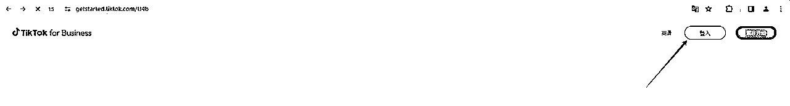
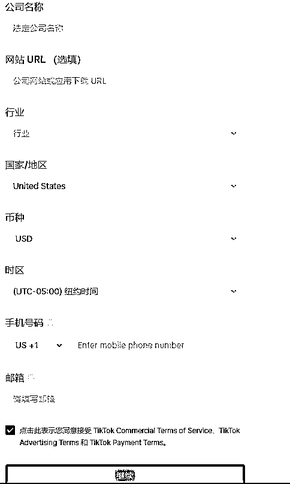

来源：https://vvxlpvbvbp3.feishu.cn/docx/VDxndAdN2oMZdDxnm6CcwoGPnFh
已经有4年没有怎么碰过TikTok广告账户了,惯性导致了一直被忽略,然而缘分让我们再次相遇的这么的猝不及防,自从6月开始Facebook开始大批量风控广告账户,公司的小伙伴们基本就处于半挂机状态,当时的TikTok企业账户风控也比较严格,于是我又想到了使用TK个人账户来进行投放,TikTok个人账户还是很友好的,首先申请的流程简单,没有数量限制,广告费用充值退款也非常的灵活,风控相对于企业账户要低一些,重要的是现在可以享受35%的广告费返还,果断开整,以上单纯碎碎念可忽略,下面进入正文 哈哈哈哈~
一个TIKTOK账户（美区）
指纹浏览器（有免费的可以搜）
科学上网（Socks5,美区）
虚拟信用卡（推荐418122卡头）感兴趣的圈友可自行搜搜
一个虚拟手机号接码（美区）
一个邮箱（Gmail,Hotmail,都可）

登录完成后会提示我们进行授权
授权成功后,会提示绑定邮箱,可以先行跳过
公司名称可以随便写,几个字面就可以,网站不需要输入任何网址,行业选择线上电商-其他
国家默认美区,如果想要别的地区也可以自己选择,注意时区,我这里选择默认,手机号码和邮箱各准备一个就可以了,后面如果还需要在申请更多的账户,可以重复使用，

输入完成后,点继续进入下个页面
1:选择国家的时候,国家和时区不符合
2:科学上网IP问题,可以尝试更换IP继续进行尝试
自动付款是:后收费模式,账单达到数值,才会从绑定的信用卡中进行扣费,初始5刀,可以控制风险
人工付款是:先充值模式,如果广告账户挂了充值的广告费无法申请退回.
当我们准备开始投放的时候选择自动付款进行绑卡操作即可,卡内需要最低10.5刀用于验证,半小时左右这笔钱就会被退回,不需要担心。
下面进入广告平台
到这里关于TikTok广告账户申请的就算是告一段落,但是还没有结束,🤭
上面我们只是完成了广告账户的申请,还需要耐心等待审核,个人习惯默认等待24小时,实际审核时间几个小时就可以搞定,然后我们就可以进入消息页面可以看到广告账户成功审核通过的通知,并附带获得35%广告费返还的资格,成功率基本是100%如有偏差可以在申请几个试试🤭
每个广告账户仅限于7月10号-8月12号期间创建的首支广告,可以获得35%的广告费返还,共计是300刀,并不是故意现在才和大家分享,当我看到这个消息的时候也是大腿拍断,因为Facebook风控的原因,个人有点摆烂了,狠狠给自己两耳光~在剩下的时间,感兴趣的圈友批量冲吧,不要怕辛苦,100个账户就是3W刀的返还,至于投放部分,生财有很多优秀的文章,我就不班门弄斧啦,如果有需要可以单独开一篇讲讲TikTok投放,咳咳~虽然很多年不碰,底子还是有一丢丢的,哈哈哈,最后文章仅供参考,欢迎各位圈友交流,一起生财有术。